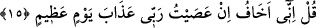
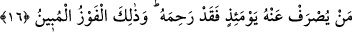
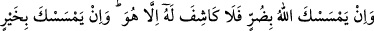
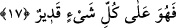

edinecek olsam, Ebû Bekr’i dost edinirdim. Lakin Allah bu arkadaşınızı dost
edinmiştir.”[93] Yani, Allah’tan başka dost edinmem demektir. Yasak olan dost
edinmenin kendisi değil, Allah’tan başkasını dost edinmektir.
“Ben” ihlâsla özünü Allah’a teslim ederek “İslâm olanların ilki olmakla
emrolundum, de.” Çünkü Hz. Peygamber (s.a.) İslâm olma ve Allah’a teslim olma
hususunda ümmetinin önderidir.
“Ve sakın ortak koşanlardan olma!” Yani bana denildi ki: “Sakın, dinî emirlerden
herhangi birinde Allah’a ortak koşanlardan olma!” Bunun mânâsı şöyledir: “Bana İslâm
olmam emredildi, ortak koşmam yasaklandı.”
İslâm’ın hakikatı, varlık zindanından kurtulmaktır. Rasûlullah (s.a.)’den başka bundan
tamâmen kurtulan yoktur. Bu yüzden kıyâmette bütün peygamberler “Nefsî, nefsî...”
derken o (s.a.), “Ümmetî, ümmetî....” diye yalvaracaktır.
15. De ki: Ben, Rabbim’e isyan edersem gerçekten büyük bir günün (kıyametin)
azabından korkarım.
“De ki: Eğer” emirlerine itâat etmeyerek ve yasakladıklarından sakınmayarak
“Rabb’ime isyan edersem, büyük bir günün” kıyamet gününün azabından “korkarım.”
Bu ifade, kâfirlerin bitip tükenmek bilmeyen hırslarının önünü kesmek, onların isyankâr
olduklarını ve bu isyanları sebebiyle büyük azabı hak ettiklerini îmâ yoluyla bildirmek
içindir.
16. O gün kim azaptan kurtarılırsa, gerçekten Allah onu esirgemiştir. İşte apaçık
kurtuluş budur.
“O gün” O büyük günde “kim azabdan kurtarılırsa” kimden azab çevrilirse,
üzerinden azab savulursa “gerçekten Allah ona acımıştır.” merhamet etmiştir. Yani onu
büyük bir belâdan kurtarmış ve nimetlendirmiş demektir. “İşte” azabın ondan
giderilmesi, “apaçık bir kurtuluştur.”